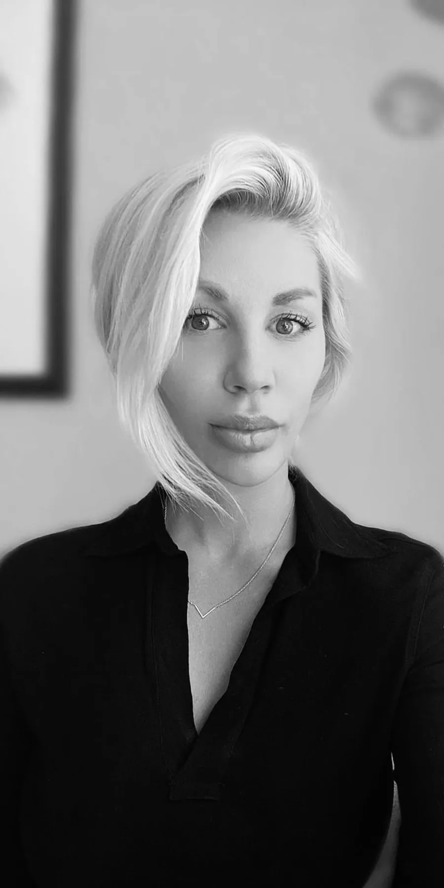

About
I built it,
gave it away,
and came back for it.
I opened my own atelier in Stockholm in 2009. Couture, made to measure, my name on the door.
In 2014 I handed it to my sister Zamina, who still runs it under her own name. Then I spent ten years inside other people's houses. Massimo Dutti, where I was store manager and tailor specialist. Acne Studios. Moncler.
I learned what a collection really costs, how a floor runs, and why most clothes are made the way they are. Which is to say, for nobody in particular.
I know both sides now. I am in Amsterdam, and I am taking commissions again.
Alexandra Scillasdotter
The long way round
- 2006 Junior buyer at Max Mara, Stockholm. The first years were spent learning what a garment costs before it is beautiful.
- 2009 Founded Scillasdotter atelier in Stockholm. Couture, made to measure, my own name on the door at twenty-something.
- 2014 Handed the atelier and the clients to my sister Zamina, who runs it under her own name to this day. Then Massimo Dutti, where I was store manager and tailor specialist, and trained the people who sold the clothes.
- 2019 Acne Studios, and then Moncler as general store manager. Ten years of seeing the industry from the other side of the counter.
- 2026 Back where I started, in Amsterdam. Same work, better eyes.
By appointment only · Currently Amsterdam · Online meetings welcome